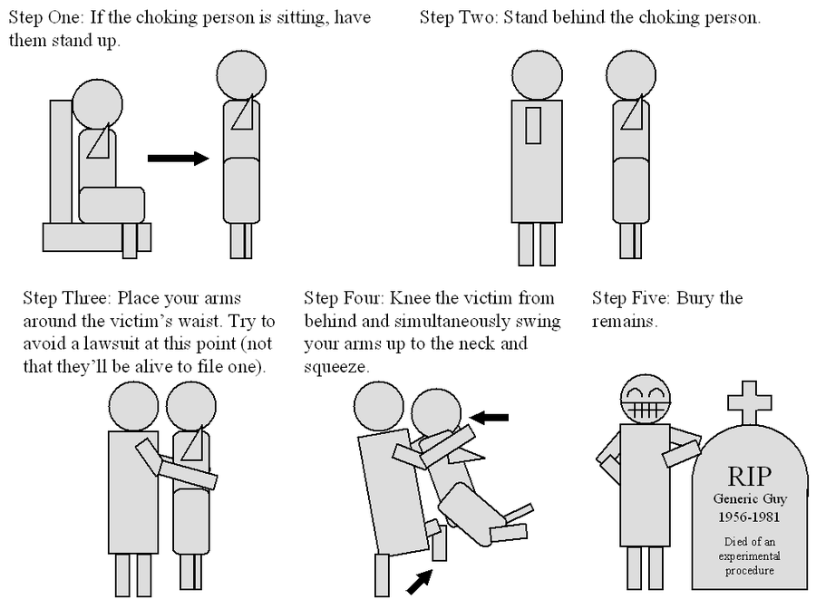
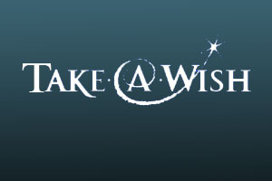
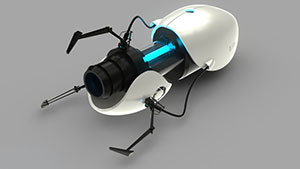

Tier 1: Counter-Heimlich Maneuver
"A reliable technique for interrupting the life-saving Heimlich Maneuver."

Completed in 1981, Aperture Labs's Counter-Heimlich Maneuver has met wild success. Shortly after Aperture Labs announced the product, there were a a string of highly publicized chokings, a testament to the success of our product. As a result, senior company officials are summoned before a Senate investigative committee. Having witnessed the success of the Counter-Heimlich Maneuver, Aperture Labs received an open-ended contract to secretly continue research on this product and the "Portal" project (see below). From 1981 to 1985, several high ranking Fatah personnel choke to death on lamb chunks despite the intervention of their bodyguards, showing that the US government has apparently put the Heimlich Counter-Maneuver to work.
Tier 2: Take-A-Wish Foundation
"A charitable organization that will purchase wishes from the parents of terminally ill children and redistribute them to wish-deprived but otherwise healthy adults."

The Take-A-Wish Foundation was created with the intention to counter the Make-A-Wish Foundation, an organization that grants wishes to terminally ill children. However, we at Aperture Labs desire equality for all peoples, regardless of race, gender, or healthiness. To fight the discrimination against healthy people brought on by Make-A-Wish Foundation, the Take- A-Wish Foundation seeks to purchase wishes from the parents of terminally ill children and redistribute them to wish-deprived but otherwise healthy adults.
Tier 3: The Portal Project
"Some kind of rip in the fabric of space... That would... Well, it'd be like, I don't know, something that would help with the shower curtains I guess. I haven't worked this idea out as much as the wish-taking one."

The Aperture Science Handheld Portal Device, originally marketed in the 1950s as an Aperture Science Portable Quantum Tunneling Device, also commonly known as a Portal Gun or by its acronym, "ASHPD", is an experimental tool used to create two portals through which objects can pass. It remains one of Aperture Labs's most famous products and is the core of our research at the Aperture Science Enrichment Center. There are currently two versions in trial: the one portal gun and the two portal gun. The portals can be placed on any surface which is made out of manufactured or refined moon rock and large enough to accommodate them. Moving objects, or certain types of surfaces, will usually prevent the formation of a portal. A unique property of our portals is that it preserves momentum. Please contact us for a detailed report on the capabilities of the ASHPD and for inquiries on how to acquire an ASHPD through test subject volunteering.